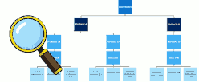
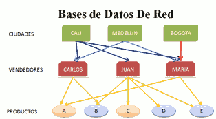
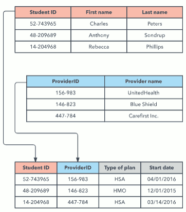
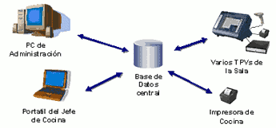
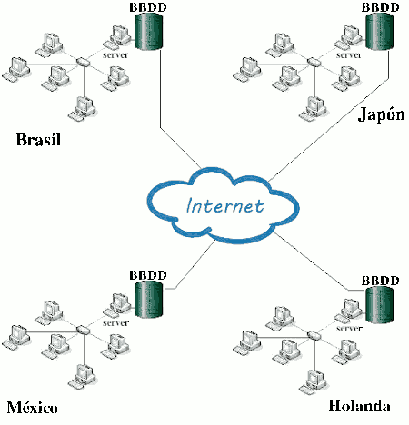

Una base de dades és una col·lecció estructurada d'informació que s'emmagatzema de manera organitzada per a permetre l'accés, la gestió i la recuperació eficients de dades.
La base de dades no sols conté les dades de l'organització, també emmagatzema una descripció d'aquestes dades. Aquesta descripció és el que es denomina metadades, s'emmagatzema en el diccionari de dades o catàleg.
Les bases de dades s'utilitzen en una varietat d'aplicacions, com a sistemes de gestió d'inventari, sistemes de gestió de clients, sistemes d'informació geogràfica (SIG), sistemes de reserves, sistemes de comptabilitat i moltes més. Proporcionen una forma eficient i estructurada d'emmagatzemar i gestionar dades, la qual cosa facilita l'accés i la recuperació d'informació important.
L'ús de la BBDD és diferent segons la persona que la utilitze:
- L'administrador: encarregat de la creació o implementació física de la base de dades. És qui tria els tipus de fitxers, els índexs que cal crear, la ubicació d'aquests, etc. En general, és qui pren les decisions relacionades amb el funcionament físic de l'emmagatzematge d'informació.
- Els dissenyadors: encarregats de dissenyar com serà la base de dades. Duran a terme la identificació de les dades, les relacions entre ells, les seues restriccions, etc. Per a això han de conéixer a fons les dades i processos a representar en la base de dades.
- Els programadors d'aplicacions: s'encarregaran d'implementar els programes d'aplicació que serviran als usuaris finals. Aquests programes d'aplicació oferiran la possibilitat de realitzar consultes de dades, inserció, actualització o eliminació d'aquests.
- Els usuaris finals: són els clients finals de la base de dades. En dissenyar, implementar i mantindre la base de dades es busca complir els requisits establits pel client per a la gestió de la seua informació.
Tipus de BBDD
A) Segons el model
Un model de base de dades mostra l'estructura lògica de la base, incloses les relacions i limitacions que determinen com s'emmagatzemen les dades i com s'accedeix a ells
Model Jeràrquic
Les BBDD jeràrquiques s'emmagatzema la informació en una estructura jeràrquica o amb un ordre d'importància. Organitza les dades en una estructura d'arbre, en la qual cada registre té un únic element o arrel. Els registres del mateix nivell es classifiquen en un ordre específic. Eixe ordre s'usa a manera d'ordre físic per a emmagatzemar la base de dades. El model és bo per a descriure moltes relacions del món real. Va ser utilitzat per IBM en la dècada dels 70 però hui dia a penes s'usa.
{kind=link}
Model en Xarxa

Tenen una gran semblança a les jeràrquiques; la seua diferència principal en la composició del node. En aquest model els nodes poden tindre diversos pares.
En l'actualitat aquest tipus de base de dades no és usat amb freqüència
Model Transaccional
Aquestes bases de dades compleixen una funció molt específica. S'encarreguen de l'enviament i recepció de dades a gran velocitat. Sol utilitzar-se en els sistemes bancari que registren operacions d'intercanvi de diners entre comptes.
Model relacional
El centre d'aquest model de BBDD és l'ús de les “relacions” entre dades. El llenguatge predominant en aquestes bases de dades és el Structured Query Language conegut com SQL. El seu funcionament radica a introduir totes les dades en registres, que posteriorment s'organitzen en taules. Aquestes BBDD són recomanables quan les dades que utilitzarem tenen un marge d'error nul i no requereixen modificacions constants.
Model orientat a objectes
Aquest model defineix una base de dades com una col·lecció d'objectes, o elements de programari reutilitzable, amb funcions i mètodes relacionats. Hi ha diversos tipus de bases de dades orientades a objectes:
- Una base de dades multimèdia incorpora elements multimèdia, com ara imatges, que no es podrien emmagatzemar en una base de dades relacional.
- Una base de dades d'hipertext permet que qualsevol objecte es connecte a qualsevol altre objecte. És útil per a organitzar lots de dades diferents entre ells, però no és ideal per a anàlisi numèrica.
El model de base de dades orientat a objectes és el millor model conegut de base de dades postrelacional ja que incorpora taules, però no es limita a elles. A aquests models també se'ls coneix com a models de base de dades híbrids.
Model de documents
Les bases de dades documentals són un model interessant de conjunts d'informació que utilitzen documents com l'estructura d'emmagatzematge i consulta de dades. Estan construïdes amb llenguatge NoSQL el que li proporciona un gran nombre d'avantatges tècnics i de flexibilitat. Permet el maneig de pesats volums d'informació en períodes mínims de temps. La seua diversitat de funcions i mòduls adaptables a múltiples mecanismes de consulta l'han convertida en un dels models preferits de treball en l'actualitat per part dels programadors.
Model deductiu
Una base de dades deductiva és una BBDD que permet la possibilitat de fer deduccions a través d'una inferència. La seua funcionalitat depén de les condicions i fets que s'emmagatzemen en la base de dades. També són conegudes com a bases de dades lògiques ja que els seus principis estan fonamentats en la lògica matemàtica.
Naixen com a resposta a les limitacions que sorgeixen en les bases de dades relacionals a l'hora d'executar consultes recursives i teoritzar sobre les relacions indirectes que pogueren generar-se entre les dades emmagatzemades. Utilitza un llenguatge anomenat datalog que li permet a l'ordinador resoldre les deduccions per a contestar consultes.
B) Segons la distribució de la informació
Centralitzades
Una BBDD Centralitzada és un sistema de gestió de dades en el qual tota la informació s'emmagatzema i gestiona en un únic lloc o servidor central. En aquest enfocament, totes les aplicacions i usuaris accedeixen a la base de dades centralitzada per a realitzar consultes, actualitzacions i altres operacions relacionades amb les dades. Avantatges:
- Un únic punt d'accés: tots els usuaris i aplicacions accedeixen a la mateixa base de dades central per a obtindre i modificar dades.
- Control centralitzat: l'administració i el control de la base de dades resideixen en un únic lloc, la qual cosa facilita la implementació de polítiques de seguretat i control d'accés.
- Consistència de dades: pel fet que totes les dades resideixen en un únic lloc, és més fàcil mantindre la integritat i la coherència de les dades.
- Senzillesa: en comparació amb sistemes distribuïts, les bases de dades centralitzades tendeixen a ser més simples d'administrar i mantindre.
- Més econòmic: tant en els recursos necessaris per a la seua implantació com en el manteniment.
No obstant això, les bases de dades centralitzades també tenen algunes limitacions i desafiaments, com:
- Punts únics de fallada: si el servidor central falla o experimenta problemes, pot afectar a totes les aplicacions i usuaris que depenen d'ell.
- Escalabilitat limitada: a mesura que la quantitat de dades i la càrrega de treball augmenten, una base de dades centralitzada pot arribar a ser insuficient i difícil d'escalar per a satisfer les necessitats creixents.
- Latència: els usuaris i aplicacions que es troben lluny del servidor central poden experimentar latència en accedir a les dades.
- Riscos de seguretat: la seguretat de la base de dades centralitzada és crucial, ja que un accés no autoritzat o un atac exitós pot comprometre totes les dades.
En molts casos, les organitzacions trien utilitzar bases de dades centralitzades quan tenen un conjunt de dades i requisits d'accés que es poden gestionar eficaçment d'aquesta manera. No obstant això, en entorns amb necessitats d'escalabilitat, alta disponibilitat o distribució geogràfica, poden optar per solucions de bases de dades distribuïdes o en el núvol per a abordar aquestes preocupacions.
SGBD Distribuides

Una base de dades distribuïda és un sistema de gestió de dades en el qual les dades s'emmagatzemen en múltiples ubicacions físiques o servidors interconnectats. Les dades es divideixen i repliquen entre múltiples nodes o servidors. Cada node en la base de dades distribuïda pot tindre la seua pròpia capacitat de processament i emmagatzematge. Avantatges:
- Distribució geogràfica: les dades s'emmagatzemen en diferents ubicacions geogràfiques, la qual cosa permet un accés més ràpid a les dades per als usuaris en eixes àrees.
- Alta disponibilitat: a causa de la redundància de dades en múltiples nodes, les bases de dades distribuïdes solen oferir una major disponibilitat i resistència a fallades. Si un node falla, les dades encara estan disponibles en altres nodes.
- Escalabilitat: és més fàcil escalar una base de dades distribuïda afegint nous nodes segons siga necessari per a manejar un major volum de dades o una major càrrega de treball.
- Rendiment millorat: la distribució de dades pot millorar el rendiment en permetre que les consultes es realitzen en paral·lel en múltiples nodes.
- Balanç de càrrega: els sistemes de bases de dades distribuïdes sovint tenen mecanismes per a equilibrar la càrrega de treball entre els nodes, assegurant que cap node se sobrecarregue.
Inconvenients:
- Complexitat d'administració: la configuració, administració i manteniment d'una base de dades distribuïda pot ser més complexa que una base de dades centralitzada.
- Consistència de dades: mantindre la consistència de les dades distribuïdes a través de múltiples nodes pot ser complicat, i es requereixen mecanismes de sincronització i control de versions.
- Latència de xarxa: la latència de xarxa pot ser un problema si els nodes distribuïts estan geogràficament separats, la qual cosa pot afectar el rendiment de les consultes.
- Seguretat: la seguretat d'una base de dades distribuïda ha de ser acuradament gestionada, ja que la distribució de dades pot augmentar la superfície d'atac.
Fragmentació d'una BBDD distribuïda
És una tècnica per a particionar una base de dades en unitats més xicotetes i manejables anomenades fragments, amb cada fragment allotjat en un servidor separat. Ve a ser com organitzar un bufet lliure de deu plats per a tots els clients d'un hotel de 2000 hostes. En lloc d'una única taula de bufet amb tots els plats, posem cada plat en la seua pròpia taula, separant unes taules d'unes altres. D'aquesta manera, més comensals poden servir-se a si mateixos simultàniament, més ràpidament i amb menys colls de botella.
Avantatges:
- Rendiment millorat. Accés paral·lel i un rendiment de consulta més ràpid.
- Escalabilitat millorada. permet augmentar els recursos en cadascun dels servidors, o dedicar major quantitat de servidors.
- Major tolerància a fallades . En una base de dades fragmentada, si un fragment experimenta un problema, els altres continuen estant operatius.
- Recuperació eficient de les dades. Les estacions individuals o les bases de dades fragmentades permeten un accés més ràpid i dirigit a la informació específica. A l'haver diversos servidors atesos els usuaris, el temps de resposta serà menor que si només hi ha un servidor atenent usuaris.
Inconvenients:
- La implementació d'una BBDD distribuïda és complexa.
- La fragmentació ha de ser equilibrada, de manera que el treball quede distribuït entre els servidors de manera equitativa, evitant sobrecarregar un servidor i que els altres estiguen ociosos.
- La cerca d'informació que es troba distribuïda en diversos servidors pot resultar una mica més lenta.
Tècniques de fragmentació
-
Fragmentació basada en el rang: consisteix a dividir les dades en funció dels rangs de valors especificats. Exemple: una plataforma de comerç electrònic fragmenta la seua base de dades de clients basant-se en els imports de compra. Un fragment maneja als clients amb quantitats de compra baixes, un altre amb quantitats moderades, etc. Això facilita la recuperació eficient d'uns certs tipus de consultes.
-
Fragmentació basada en hash: implica aplicar una funció hash a una clau triada (per exemple, ID de client). El resultat determina el fragment en el qual s'emmagatzemen les dades. Exemple: en una plataforma de xarxes socials, les dades dels usuaris poden fragmentar-se mitjançant hash basant-se en els ANEU d'usuari. La funció hash assignaria constantment a cada usuari a un fragment específic. Aquest enfocament garanteix una distribució homogènia dels usuaris entre fragments, la qual cosa promou un accés i un emmagatzematge de dades equilibrades.
-
Fragmentació basada en llistes: implica especificar explícitament quina fragmentació emmagatzemarà unes certes dades basant-se en una llista predefinida de valors. Exemple: una aplicació de missatgeria podria fraccionar una base de dades d'historial de xat basada en el codi del país. Cada fragment és responsable de les converses que s'originen o que impliquen usuaris en països específics.